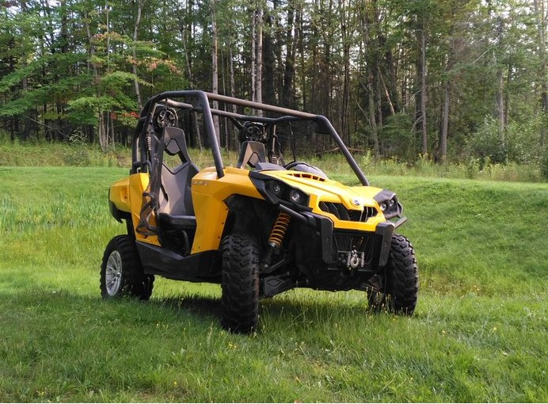

Bienvenue sur notre application web eco-DRIVE.
Cette application permet de créer un itiniéraire entre deux point dans l'onglet "navigation".
Après avoir indiqué votre point de départ et votre point d'arrivée il est
possible de récupérer la valeur des angles et l'élévation.
Attention :Le site est encore en developpement, vous pouvez nous contacter dans
l'onglet "contact" si vous rencontrez un problème.
